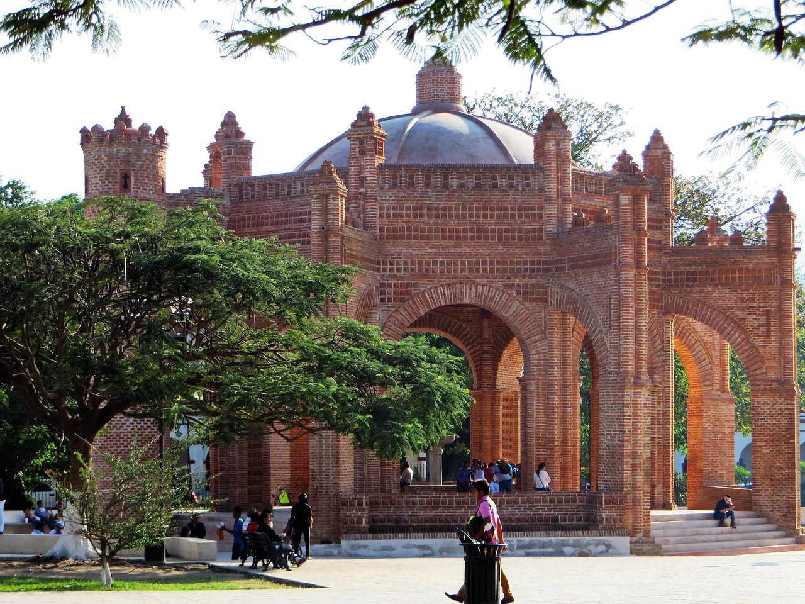
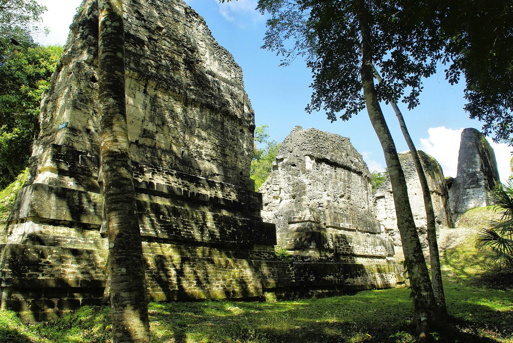
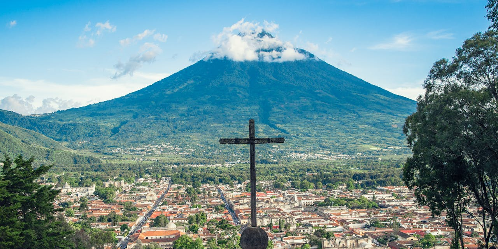

Chiapas + Petén + Antigua: Unified 12-Day Journey
March 3–13, 2026 | 12 Days / 11 Nights | $1,980 USD per person | Helicopter El Mirador: +$600 USD



Why Choose This 12-Day Combined Experience
This integrated itinerary brings together three distinct regions—Chiapas mountains and ruins, Petén jungle temples, and Antigua colonial heritage—into one seamless journey. Hotel Villa Mercedes in San Cristóbal, Ramada in Flores, and heritage properties in Antigua provide comfortable bases for daily explorations. All logistics, transfers, guides, breakfasts, park entries, and boat tours are included in one transparent price.
- Confirmed Dates: March 3–13, 2026 (Chiapas 5d + Petén 3d + Antigua 2d)
- All-Inclusive: $1,980 USD per person (breakfasts, transfers, guides, park entries, boat tours)
- 4-Star Hotels: Villa Mercedes (San Cristóbal), Ramada (Flores), heritage inn (Antigua)
- Helicopter El Mirador: Optional +$600 USD with archaeologist Marcia Chacón
- Payment Plans: 0% interest over 2, 3, or 4 months
- Group Rates: Discounts for 5+ travelers; family packages available
Contact NTC Luxury Travels for private group arrangements or regional extensions.
Flexible Departures
Choose any month of the year. We tailor logistics around your preferred travel window and flight schedules.
What is Covered
Transportation, hotels, breakfasts, selected lunches, park entries, bilingual guides, cross-border support, and travel insurance.
Itinerary: March 3–13, 2026
Chiapas (5 days): San Cristóbal, El Chiflón cascades, Montebello lakes, Sumidero Canyon, Palenque | Petén (3 days): Flores, Tikal, optional El Mirador helicopter (+$600 USD per traveler), Yaxhá, Maya ceremonies | Antigua (2 days): Colonial heritage, Cerro de la Cruz, Guatemala City departure. Times flexible per weather & group preferences.
Welcome: Tuxtla Gutiérrez → San Cristóbal de las Casas
- Reception at Ángel Albino Corzo International Airport by NTC representatives.
- 1-hour scenic drive to San Cristóbal de las Casas (2,100m highlands).
- Hotel Villa Mercedes (4-star) check-in and welcome briefing.
- Colonial center orientation: Zócalo, cathedral, artisan markets, sunset viewpoint.
- Welcome dinner (regional Chiapan cuisine).
Meals: Dinner | Hotel: Villa Mercedes
El Chiflón Cascades + Lagunas de Montebello National Park
- El Chiflón (1.2 km trail): Turquoise waterfalls, swimming in designated pools, 2-hour exploration.
- Montebello National Park (3 hours): Visit 5 pristine blue-green lakes; optional swimming; lunch at local restaurant or packed meal.
- Return to San Cristóbal.
Includes: Transport, CONANP entry, guide, insurance | Bring: Swimsuit, water shoes, light jacket, repellent
Sumidero Canyon Lancha + Chiapa de Corzo
- Lancha ride through Sumidero (~2 hours): 1,000m vertical cliff walls, crocodile/bird spotting, Río Grijalva wildlife.
- Chiapa de Corzo town (1-hour free time): Colonial plaza, artisan shops, traditional restaurant lunch.
- Canyon miradores: Panoramic photograph stops above the canyon.
- Evening at leisure in San Cristóbal.
Includes: Transport, boat, guide, hotel breakfast, insurance | Bring: Camera, sun protection, cash for local meals
Agua Azul + Misol-Há + Palenque Archaeological Zone
- 04:30 departure, breakfast en route.
- Cascadas de Agua Azul (1.5h): Multi-level turquoise pools, swimming in authorized areas.
- Cascada de Misol-Há (1h): Walk behind waterfall; optional swim; jungle views.
- Zona Arqueológica de Palenque (2h guided tour): INAH archaeologist explores Temple of the Cross, Palace, Ball Court; 7th-century Maya city layout explained.
- Transfer to Palenque town; hotel check-in; dinner.
Includes: Hotel breakfast, transport, CONANP+INAH entries, guide, insurance | Bring: Swimsuit, snacks, light snorkel gear (optional), sturdy shoes
Mexico–Guatemala Border Crossing (El Ceibo) → Flores
- Mexican Immigration Exit: El Ceibo border station (have passports ready).
- Guatemalan Immigration Entry: Standard processing; NTC staff assist.
- Transfer to Flores (Petén): ~2 hours through jungle; scenic Río San Pedro Mártir overlook.
- Ramada Flores (4-star, Lake Petén Itzá waterfront) check-in.
- Dinner and sunset walk along Flores promenade.
IMPORTANT: Ensure passport valid 6+ months; check visa requirements (most nationalities receive 90-day tourist entry) | Hotel: Ramada Flores
*OPTIONAL ADD-ON: El Mirador Helicopter Tour (+$600 USD)
For those choosing the helicopter upgrade with Dr. Marcia Chacón:
- Helicopter flight (45 min) to El Mirador—remote jungle site with Complex IV (65m pyramid).
- Archaeological insights on pre-Classic Maya civilization; ancient city layout.
- Box lunch; return helicopter flight.
For those NOT taking helicopter:
- Day at leisure: explore Flores town shops, museums, restaurants, local artisan cooperatives.
- Optional: boat tour around Lake Petén Itzá (separate cost).
Note: Helicopter subject to weather; confirmed 24h in advance | Hotel: Ramada Flores
Tikal National Park Full Immersion
- 06:30 transfer from Flores (~1 hour).
- Expert guided tour (INAH archaeologist): Complex IV, Temple IV (64m—tallest structure), Central Plaza, Temple of the Grand Priest, royal palaces.
- Rainforest wildlife: Jaguars (rare sightings possible), puma, howler monkeys, coatis, tropical birds, dense primary jungle canopy.
- Petén Itzá catamaran tour return journey.
- Box lunch; return to Flores; evening relaxation.
Includes: Transport, park entry (UNESCO-protected), guide, box lunch, boat, insurance | Bring: Water, snacks, strong repellent, long sleeves, waterproof bag, hiking boots
Traditional Maya Ceremony (Actún Kan) + Yaxhá Archaeological Site
- Actún Kan Caves Ritual (morning): Participate in authentic Maya spiritual ceremony led by local shamans; copal incense, blessings, prayers; educational and reverent.
- Yaxhá National Park (afternoon): Less crowded than Tikal; explore pyramid complexes, smaller Classic-period ruins; INAH guide explains hieroglyphics and urban design.
- Return to Flores; free evening for local market exploration or restaurant dining.
Includes: Ceremony, transport, Yaxhá entry, guide, insurance | Respectful dress required for ceremony; camera etiquette honored
Flores → Guatemala City → Antigua Guatemala (Colonial Gateway)
- Flight: Flores (La Aurora) → Guatemala City (Mundo Maya). Domestic 1-hour flight.
- Scenic 1-hour drive to Antigua (highland city, 1,500m elevation).
- Heritage hotel check-in (colonial property, UNESCO zone).
- Afternoon walking tour:
- Cerro de la Cruz (hilltop; 360° panoramic views of Antigua basin).
- San Juan del Obispo neighborhood; colonial monasteries; local artisan textile workshops.
- Farewell welcome dinner (traditional Guatemalan cuisine).
Includes: Hotel breakfast (Flores), domestic flight, transfer, afternoon guide tour, dinner | Hotel: Heritage property in colonial Antigua
Antigua Guatemala UNESCO World Heritage Walking Tour
- Parque Central (Central Plaza): Cathedral (founded 1680), Government Palace, Museum del Libro (ancient manuscripts).
- Colonial Churches: La Merced, Santo Domingo, San Felipe; baroque facades, interior decorations, local religious art.
- Market & Artisan Quarter: Traditional indigenous textiles, weaving demonstrations, coffee roastery tours, chocolate workshop (optional, separate cost).
- Free afternoon: Spa, coffee plantation visit, hot springs, or independent exploration.
- Farewell celebration dinner with specialties (pepian, fiambre).
Includes: Hotel breakfast, guide services, colonial site visits, farewell dinner | Optional (separate cost): Coffee tour, chocolate workshop, hot springs
Antigua → Guatemala City International Airport (Departure)
- Hotel breakfast.
- Transfer to La Aurora International Airport (~45 min depending on traffic).
- NTC Luxury Travels staff assist with check-in and international departure.
- Depart on your international flight.
- End of NTC services.
Important: Confirm international flight departure times 48 hours prior. Recommend booking return flights departing after 12:00 PM to allow comfortable travel time. Have all immigration documents (passport, exit stamps) ready.
Package Inclusions and Important Notes
Included
- Eleven nights in 4-star hotels (double occupancy)
- Meals as per program (typically breakfast; some lunches as listed)
- Ground transportation in modern, climate-controlled vehicles
- Cross-border support at El Ceibo (Mexico → Guatemala)
- Professional bilingual guides throughout the itinerary (local guides where required)
- Entrance fees to parks and archaeological sites per itinerary
- Basic on-board passenger insurance; 24/7 support via WhatsApp
Not Included
- International flights to Tuxtla Gutiérrez and from Guatemala City
- Dinners (unless expressly listed) and personal expenses
- Tips for guides and drivers (suggested $5–$10 USD per day)
- Optional helicopter to El Mirador (+$600 USD per traveler) and any requested domestic flights
- Single supplement (available on request)
Good to Know
- Passport must be valid for at least six months beyond travel dates.
- Vaccines are not required, but we recommend travel insurance upgrades.
- Average walking: 8,000 to 10,000 steps per day, some uneven terrain.
- Bring light layers; temperatures range from highland cool to jungle warm.
Upgrade Ideas
- Helicopter flight to El Mirador (+$600 USD; from Flores)
- Overnight stay in Rio Dulce eco-lodge or Flores lakeside boutique hotel
- Hot air balloon ride in Chiapas (seasonal)
- Professional photo session in Antigua or Flores
Ready to personalize it?
Send us your preferred dates, number of travelers, and whether you want the helicopter or Rio Dulce extension. Our planners will reply within 24 hours with availability, payment plan options, and next steps.